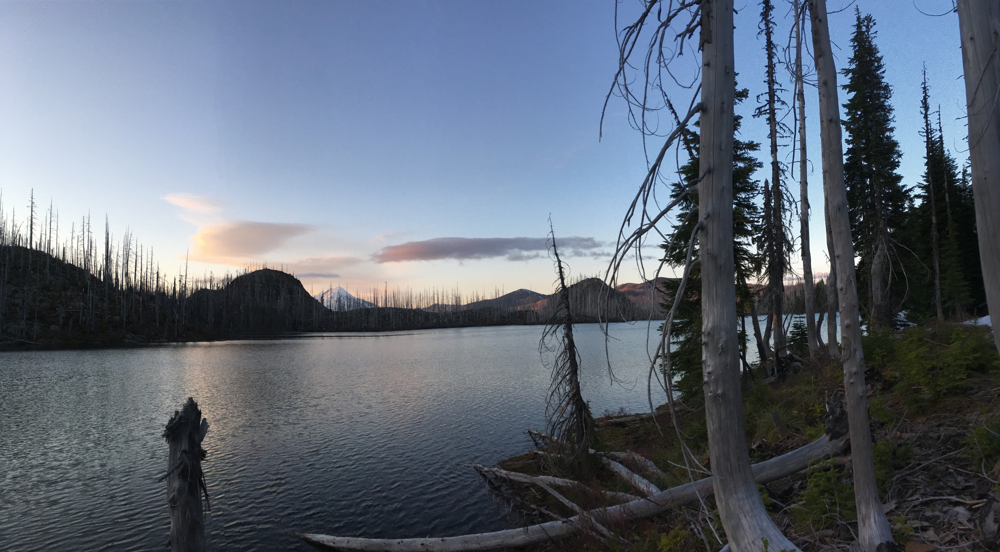

Backpacking The NorthWest 
The purpose of this story map is to show and tell the adventures that my girlfriend and I go on along with Finn the dog. Most of these trip so far have taken place in oregon and Idaho, but I hope to expand them to the Pacific NorthWest as time goes by. I'm an geology and geospatial professional and I love combining technology and recreation to make maps of all kinds of things. This is really just another way to help me learn about web mapping and programing languages, and to show people relatively up to date data on hiking trails, and images along the way that I think are sweet.
Hike to Jorn Lake
The hike to Jorn Lake is approximately 7 miles into the Jefferson Wilderness in the Cascade Range of Oregon.
The above image with a bearing approximately northeast shows Jorn Lake, and the white peak is in the background is Mt. Jefferson.
Hike to Lake of the Woods
The hike to Lake of the Woods is a 5 mile hike into the Jefferson Wilderness in the Cascade Range of Oregon.

The image above shows a frosty Lake of the Woods and South Cinder Peak in the background.
Hike to Summit Lake
The hike to summit lake is about 4.5 miles from the Pacific Crest trail access on hwy 20.

The image above is Summit Lake.
The Mirror Lake Heart Attack
The hike to Mirror Lake is about 8 miles from the Two Pan trailhead in the Wallowa Mountains.

The image above is looking south at Mirror lake and the peak in the background is Eagle Cap.
Hike From Hell
This hike is about 2.5 miles long off the North Folk of the Sanit Joe River. The Path is a multi-use trail for hikes, horses and dirt bikes.